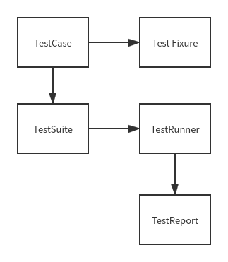

UNITTEST内容
unittest介绍（各个组件的介绍）
测试固件
setUp&tearDown
setUpClass&tearDownClass
程序执行的顺序
测试用例的编写
测试执行
构建测试套件
用例按顺序执行（addTest）
测试用例执行顺序的详解
按测试类执行（makeSuite）
加载测试类（TestLoader）
按测试模块来执行
优化测试套件
分离测试固件（模块化的应用）
测试断言
assertEqual(a,b)
assertTrue(x)
assertIn(a,b)
测试断言的注意事项
批量执行测试用例（discover）
生成测试报告
Python2生成测试报告
Python3生成测试报告
测试报告的注意事项
新增当前时间
unittest的缺陷
Cocerage的应用
Unittest组成 
TestSuite 测试套件 加载测试用例
先通过 unittest.TestSuite() 创建测试套件实例对象，如：suite = unittest.TestSuite()
再通过 addTest() 往测试套件里添加当个测试用例，或通过addTests([…]) 添加多个测试用例（列表中伪测试用例方法名）执行测试套件里的测试用例
如果有多个测试用例，类里有100个用例？怎么办，要添加100次吗？
1 2 3 4 5 6 7 8 9 10 11 12 13 14 15 16 17 18 19 20 import unittestclass TestHC (unittest.TestCaase ): def test_01 (self ): print ("用例1" ) def test_02 (self ): print ("用例2" ) if __name__ == '__main__' : """方式1添加单条测试用例""" suite = unittest.TestSuite() suite.addTest(TestHC('test_02' )) suite.addTest(TestHC('test_01' )) """方式2添加多条测试用例"""
加载测试用例类
先通过 unittest.TestSuite() 创建测试套件实例对象
再通过 unittest.TestLoader() 创建加载对象，加载测试用例类
1 2 3 4 5 6 7 8 9 10 11 12 13 14 15 16 17 18 19 20 21 22 23 24 25 26 27 28 29 30 31 32 33 34 import unittestclass TestHC (unittest.TestCase ): def test_001 (self ): print ("用例1" ) def test_002 (self ): print ("用例2" ) class Test_Action (unittest.TestCase ): def test_003 (self ): print ("用例3" ) def test_004 (self ): print ("用例4" ) if __name__ == '__main__' : """方式1添加单条用例""" suite = unittest.TestSuite() loader = unittest.TestLoader() suite.addTest(loader.loaderTestFromTestCase(TestHC)) suite.addTest(loader.loaderTestFromTestCase(TestAction)) """添加多个类的方法""" suite1 = unittest.TestLoader().loadTestFromCase(TestHC) suite2 = unittest.TestLoader().loadTestFromCase(Test_Action) suite = unittest.TestSuite(suite1,suite2)
加载指定路径里的测试用例
通过 unittest.defaultTestLoader.discover()将指定路径的测试用例加载至测试用例集。注意：这里不需要创建 unittest.TestSuite 对象。如下代码所示，test_dir 为指定路径。pattern = test_*.py 表示加载以 test_ 开头的模块中的测试用例，指定运行某模块时 pattern 参数指定全名即可，如：pattern=’test_sum.py’。路径跟 pattern 参数都可以自定义。
1 2 3 4 5 6 7 8 9 10 11 12 13 14 15 import unittesttest_dir = './test_case' discover = unittest.defaultTestLoader.discover(test_dir,pattern='test*.py' ) if __name__ == '__main__' : runner = unittest.TextTestRunner() runner.run(discover)
使用 TextTestRunner 执行测试用例
unittest 框架执行测试用例之前，需先创建 TextTestRunner 实例 ，再调用该实例的 run() 方法
1 2 3 4 5 runner = unittest.TextTestRunner() runner.run(suite)
整合的最终结果
1 2 3 4 5 6 7 8 9 10 11 12 13 14 15 16 17 18 19 20 21 22 23 24 25 26 27 28 29 30 31 32 33 34 35 36 37 38 39 40 41 42 43 44 45 46 47 48 49 50 51 52 53 54 55 56 57 58 59 60 61 """方式3批量添加""" import os,sys import unittest import time from report import HTMLTestRunner dirname,filename = os.path.split(os.path.abspath(sys.argv[0 ])) print (dirname,filename) case_path = ".\\case\\" result = dirname + "\\report\\" def creatsuite (): testunit = unittest.TestSuite() discover = unittest.defaultTestLoader.discover(case_path,pattern='*.py' ,top_level_dir=None ) for test_suite in discover: for casename in test_suite: testunit.addTest(casename) return testunit test_case = createsuite() now = time.strftime('%Y-m-%d-%H_%M_%S' ,time.localtime(time.time())) day = time.strftime('%Y-%m-%d' ,time.localtime((time.time()))) report_dir = result + day if not os.path.exists(report_dir): os.mkdir(report_dir) filename = report_dir + "\\" + now + "_result.html" fp = open (filename,'wb' ) runner = HTMLTestRunner.HTMLTestRunner( stream = fp, title = "xxx测试报告" description = "执行情况：" ) runner = unittest.TextTestRunner() runner.run(test_case) fp.close()
verbosity=[0/1/2]
0代表得到执行的测试总数和全局结构
1代表得到成功的现实，失败显示F，错误显示E，成功显示.
2可以得到详细的信息
TestCase 测试用例 测试用例类，我们做单元测试时编写的测试用例就是继承TestCase类来实现具体的测试用例
1 2 3 4 5 6 7 8 9 10 11 12 import unittestclass UserCase (unittest.TestCase ): def test_001 (self ): print ("测试用例1" ) def test_002 (self ): print ("测试用例2" ) if __name__ == '__main__' : unittest.main()
可以这样理解：每一个继承TestCase类的子类里面实现的具体的方法（以test开头的方法）都是一条用例
既然我们写了用例，那用例又是如何被执行的呢？这就是下面要讲的TestCase类里面run方法，先贴一下代码
1 2 3 4 5 6 7 8 9 10 11 12 13 14 15 16 17 18 19 20 21 22 23 24 25 26 27 28 29 30 31 32 33 34 35 36 37 38 39 40 41 42 43 44 45 46 47 48 49 50 51 52 53 54 55 56 57 58 59 60 61 62 63 64 65 66 67 68 69 70 71 72 73 74 75 76 77 78 79 80 81 82 83 84 def run (self, result=None ): orig_result = result if result is None : result = self.defaultTestResult() startTestRun = getattr (result, 'startTestRun' , None ) if startTestRun is not None : startTestRun() self._resultForDoCleanups = result result.startTest(self) testMethod = getattr (self, self._testMethodName) if (getattr (self.__class__, "__unittest_skip__" , False ) or getattr (testMethod, "__unittest_skip__" , False )): try : skip_why = (getattr (self.__class__, '__unittest_skip_why__' , '' ) or getattr (testMethod, '__unittest_skip_why__' , '' )) self._addSkip(result, skip_why) finally : result.stopTest(self) return try : success = False try : self.setUp() except SkipTest as e: self._addSkip(result, str (e)) except KeyboardInterrupt: raise except : result.addError(self, sys.exc_info()) else : try : testMethod() except KeyboardInterrupt: raise except self.failureException: result.addFailure(self, sys.exc_info()) except _ExpectedFailure as e: addExpectedFailure = getattr (result, 'addExpectedFailure' , None ) if addExpectedFailure is not None : addExpectedFailure(self, e.exc_info) else : warnings.warn("TestResult has no addExpectedFailure method, reporting as passes" , RuntimeWarning) result.addSuccess(self) except _UnexpectedSuccess: addUnexpectedSuccess = getattr (result, 'addUnexpectedSuccess' , None ) if addUnexpectedSuccess is not None : addUnexpectedSuccess(self) else : warnings.warn("TestResult has no addUnexpectedSuccess method, reporting as failures" , RuntimeWarning) result.addFailure(self, sys.exc_info()) except SkipTest as e: self._addSkip(result, str (e)) except : result.addError(self, sys.exc_info()) else : success = True try : self.tearDown() except KeyboardInterrupt: raise except : result.addError(self, sys.exc_info()) success = False cleanUpSuccess = self.doCleanups() success = success and cleanUpSuccess if success: result.addSuccess(self) finally : result.stopTest(self) if orig_result is None : stopTestRun = getattr (result, 'stopTestRun' , None ) if stopTestRun is not None : stopTestRun()
run方法的第一个参数是result
下面详细说明一下run方法里面得逻辑：
1 2 3 4 5 6 7 8 9 orig_result = result if result is None : result = self.defaultTestResult() startTestRun = getattr (result, 'startTestRun' , None ) if startTestRun is not None : startTestRun() self._resultForDoCleanups = result result.startTest(self)
这一部分代码是用来实例化一个TestResult类，如果run方法没有传入result参数，则用self.defaultTestResult方法返回一个TestResult类的实例，并且如果TestResult如果有startTestRun方法就执行startTestRun方法。后面两句中的第一句是将result赋值TestCase实例_resultForDoCleanups属性，这个会在后面再说，第二句是执行result的startTest方法（可以看一下TestResult的startTest方法）。
继续往下看代码：
1 2 3 4 5 6 7 8 9 10 11 testMethod = getattr (self, self._testMethodName) if (getattr (self.__class__, "__unittest_skip__" , False ) or getattr (testMethod, "__unittest_skip__" , False )): try : skip_why = (getattr (self.__class__, '__unittest_skip_why__' , '' ) or getattr (testMethod, '__unittest_skip_why__' , '' )) self._addSkip(result, skip_why) finally : result.stopTest(self) return
第一句代码：testMethod = getattr(self, self._testMethodName)，这句主要获取TestCase类里面的方法，而self._testMethodName就是我们编写测试类里面的的方法（以test开头的方法）。比如上面例子中的testAddUser方法
1 2 3 4 5 6 7 8 9 10 11 12 13 14 15 16 17 18 19 20 21 22 23 24 25 1 、TestCase带有__unittest_skip__属性：@unittest.skip('class skip' class UnitTestCase (unittest.TestCase ): def test01 (self ): print ('test01' ) def test02 (self ): print ('test02' ) def tearDown (self ): print ('teardown' ) if __name__ == '__main__' : unittest.main() 2 、方法带有__unittest_skip__属性@unittest.skip('class skip' class UnitTestCase (unittest.TestCase ): @unittest.skip('skip' def test01 (self ): print ('test01' ) @unittest.skip('skip' def test02 (self ): print ('test02' ) def tearDown (self ): print ('teardown' ) if __name__ == '__main__' : unittest.main()
而unittest_skip 、unittest_skip_why 这两个属性是如何给类或方法带上的呢，那让我们来看一下skip方法。先贴代码：
1 2 3 4 5 6 7 8 9 10 11 12 13 14 15 def skip (reason ): """ Unconditionally skip a test. """ def decorator (test_item ): if not isinstance (test_item, (type , types.ClassType)): @functools.wraps(test_item ) def skip_wrapper (*args, **kwargs ): raise SkipTest(reason) test_item = skip_wrapper test_item.__unittest_skip__ = True test_item.__unittest_skip_why__ = reason return test_item return decorator
从代码中可以看出skip方法会给test_item（也就是类名或者方法名）增加两个属性unittest_skip ，unittest_skip_why 并分别赋值为True和reason。
我们继续上面的run方法剩下部分的代码分析：如果没有skip装饰类或方法，则执行下面的逻辑：
1 2 3 4 5 6 7 8 9 10 11 12 13 14 15 16 17 18 19 20 21 22 23 24 25 26 27 28 29 30 31 32 33 34 35 36 37 38 39 40 41 42 43 44 45 46 47 48 49 50 51 52 53 54 55 56 57 58 try : success = False try : self.setUp() except SkipTest as e: self._addSkip(result, str (e)) except KeyboardInterrupt: raise except : result.addError(self, sys.exc_info()) else : try : testMethod() except KeyboardInterrupt: raise except self.failureException: result.addFailure(self, sys.exc_info()) except _ExpectedFailure as e: addExpectedFailure = getattr (result, 'addExpectedFailure' , None ) if addExpectedFailure is not None : addExpectedFailure(self, e.exc_info) else : warnings.warn("TestResult has no addExpectedFailure method, reporting as passes" , RuntimeWarning) result.addSuccess(self) except _UnexpectedSuccess: addUnexpectedSuccess = getattr (result, 'addUnexpectedSuccess' , None ) if addUnexpectedSuccess is not None : addUnexpectedSuccess(self) else : warnings.warn("TestResult has no addUnexpectedSuccess method, reporting as failures" , RuntimeWarning) result.addFailure(self, sys.exc_info()) except SkipTest as e: self._addSkip(result, str (e)) except : result.addError(self, sys.exc_info()) else : success = True try : self.tearDown() except KeyboardInterrupt: raise except : result.addError(self, sys.exc_info()) success = False cleanUpSuccess = self.doCleanups() success = success and cleanUpSuccess if success: result.addSuccess(self) finally : result.stopTest(self) if orig_result is None : stopTestRun = getattr (result, 'stopTestRun' , None ) if stopTestRun is not None : stopTestRun()
我们分解开来分析，第一部分 ：
1 2 3 4 5 6 7 8 9 try : success = False self.setUp() except SkipTest as e: self._addSkip(result, str (e)) except KeyboardInterrupt: raise except : result.addError(self, sys.exc_info())
在用例执行之前给是否成功的标识赋值为false，success=False
第二部分：
1 2 3 4 5 6 7 8 9 10 11 12 13 14 15 16 17 18 19 20 21 22 23 24 25 26 27 28 29 30 31 32 33 34 35 36 37 38 39 40 41 42 else : try : testMethod() except KeyboardInterrupt: raise except self.failureException: result.addFailure(self, sys.exc_info()) except _ExpectedFailure as e: addExpectedFailure = getattr (result, 'addExpectedFailure' , None ) if addExpectedFailure is not None : addExpectedFailure(self, e.exc_info) else : warnings.warn("TestResult has no addExpectedFailure method, reporting as passes" , RuntimeWarning) result.addSuccess(self) except _UnexpectedSuccess: addUnexpectedSuccess = getattr (result, 'addUnexpectedSuccess' , None ) if addUnexpectedSuccess is not None : addUnexpectedSuccess(self) else : warnings.warn("TestResult has no addUnexpectedSuccess method, reporting as failures" , RuntimeWarning) result.addFailure(self, sys.exc_info()) except SkipTest as e: self._addSkip(result, str (e)) except : result.addError(self, sys.exc_info()) else : success = True try : self.tearDown() except KeyboardInterrupt: raise except : result.addError(self, sys.exc_info()) success = False cleanUpSuccess = self.doCleanups() success = success and cleanUpSuccess if success: result.addSuccess(self)
如果是setup部分没有报错或异常，则执行我们的testMethod方法（即我们写的具体的用例方法，以test开头），接下来的代码都是处理异常，else部分是如果没有异常则把success标识置为true，表示用例执行通过，然后执行tearDown部分的代码，如果tearDown部分遇到异常了，success标识又置为false。
第三部分：
1 2 3 4 5 6 finally : result.stopTest(self) if orig_result is None : stopTestRun = getattr (result, 'stopTestRun' , None ) if stopTestRun is not None : stopTestRun()
执行result的stopTest和stopTestRun方法（如果有）
上面我们介绍了run方法，那又是什么时候会调用run方法呢，再看TestCase的类里面方法，发现有一个call 魔术方法：
1 2 def __call__ (self, *args, **kwds ): return self.run(*args, **kwds)
会去调我们的run方法（如果不太明白call方法是如何使用的，请百度一下）,这就让我们知道肯定有一个地方调用了类似这样一个方法(以上面的例子为例)：TestCase(‘testAddUser’)(result)，这就是我的下一篇分析unittest之TestSuite类说明要讲的内容了
我们根据上面的分析可以来举一个列子来试验一下：
1 2 3 4 5 6 7 8 9 10 11 12 13 14 import unittestclass UserCase (unittest.TestCase ): def testAddUser (self ): print ("add a user" ) def testDelUser (self ): print ("delete a user" ) if __name__ == '__main__' : result = unittest.TextTestResult(sys.stdout,'test result' ,1 ) testcase = UserCase('testAddUser' ) testcase(result)
运行结果如下：
1 2 3 4 5 E:\PythonWorkSpace>python test.py add a user . E:\PythonWorkSpace>
可以运行成功，说明跟我们的分析一直，我们可以直接通过TestCase的run方法运行我们的用例，或者用过它的call 魔术方法也是可以的，即上面例子中的testcase(result)就是通过此魔术方法去调用的run方法。
TestFixure 我们可以把TestFixture看作夹心饼干外层的两片饼干，这两片饼干就是setUp/tearDown，中间的奶油就是测试用例。除此之外，unittest还提供了更大范围的Fixture，如测试类、测试模块的Fixture。
用例级别 setUp/tearDown
setUp：测试用例开始前执行（以一条测试用例为单位）
tearDown：测试用例结束时执行（以一条测试用例为单位）
使用
1 2 3 4 5 6 7 def setUp (self ): print ("test case start" ) def tearDown (self ): print ("test case end" )
类级别 setUpClass/tearDownClass
setUpClass：测试用例类开始前执行
tearDownClass：测试用例类结束时执行
使用
1 2 3 4 5 6 7 8 9 @classmethod def setUpClass (cls ): print ("test class start" ) @classmethod def tearDownClass (cls ): print ("test class end" )
@classmethod 是一个函数修饰符，它表示接下来的是一个类方法，而对于平常我们见到的则叫做实例方法。类方法的第一个参数cls，而实例方法的第一个参数为self，表示该类的一个实例。
@classmethod 不需要self参数，但第一个参数需要表示自身类的cls参数
1 2 3 4 5 6 7 8 9 10 11 12 13 14 15 16 17 18 19 20 from datetime import dateclass Person : def __init__ (self, name, age ): self.name = name self.age = age @classmethod def fromBirthYear (cls, name, birthYear ): return cls(name, date.today().year - birthYear) def display (self ): print (self.name + "'s age is: " + str (self.age)) person = Person('Adam' , 19 ) person.display() person1 = Person.fromBirthYear('John' , 1985 ) person1.display()
输出
1 2 Adam's age is: 19 John' s age is : 31
在这里，我们有两个类实例创建者，一个构造函数和一个fromBirthYear方法。
构造函数接受普通参数 名称 和 年龄. 同时，fromBirthYear需要班级, 名称 和 出生年, 通过用当前年份减去当前年龄来计算当前年龄并返回类实例。
fromBirthYear 方法将 Person 类（不是 Person 对象）作为第一个参数 类并通过调用返回构造函数cls(name, date.today().year - birthYear)，相当于Person(name, date.today().year - birthYear)
在方法之前，我们看到@classmethod. 这称为用于转换为类方法的装饰器 。fromBirthYear``classmethod()
模块级别 setUpModule/tearDownModule
setUpModule：整个模块开始前执行
tearDownModule：整个模块结束时执行
使用
1 2 3 4 5 6 7 def setUpModule (): print ("test module start" ) def tearDownModule (): print ("test module end" )
实例
1 2 3 4 5 6 7 8 9 10 11 12 13 14 15 16 17 18 19 20 21 22 23 24 25 26 27 28 29 30 31 32 33 34 35 36 37 38 39 import unittestdef setUpModule (): print ("模块级别开始 test module start" ) def tearDownModule (): print ("模块级别结束 test module end" ) class MyTest (unittest.TestCase ): @classmethod def setUpClass (cls ): print ("类级别开始 test class start" ) @classmethod def tearDownClass (cls ): print ("类级别结束 test claass end" ) def setUp (self ): print ("用例级别开始 test case start" ) def tearDown (self ): print ("用例级别结束 test case end" ) def test_case_001 (self ): print ("测试用例1" ) def test_case_002 (self ): print ("测试用例2" ) if __name__ == '__main__' : unittest.main()
输出结果
1 模块级别开始 test module start类级别开始 test class start用例级别开始 test case start测试用例1用例级别结束 test case end.用例级别开始 test case start测试用例2用例级别结束 test case end.类级别结束 test claass end模块级别结束 test module end----------------------------------------------------------------------Ran 2 tests in 0.000sOK
总结
1、setUpModule/tearDownModule：在整个模块的开始与结束时被执行。
2、setUpClass/tearDownClass ：在测试类的开始与结束时被执行。
3、setUp/tearDown ： 在测试用例的开始与结束被执行。
注意
4、setUpClass/tearDownClass 为类方法，需要通过@classmethod 进行装饰，另外方法的参数为cls，cls和self没有本质上的区别，都只表示方法的第一个参数。
5、使用场景，比如WEB自动化，浏览器初始化工作，可以使用。接口自动化需要登录的接口，然后拿到token等等令牌可以使用。
6、六个条件都是非必要条件，如果没有可以使用pass 占位符即可。
TestRunner执行测试 不知道如何翻译这个单词才好，我就叫它文本类测试用例运行器吧，大概就这个意思。
通过前两篇对TestCase和TestSuite类的详解，我们都知道他们都有一个自己的run方法，其实我们可以直接调用他们各自的run方法就可以执行我们的测试用例或测试集了，我们只需要初始化一个TestResult类或者其子类的实例传入到第一个参数即可，比如：
1 import sysimport unittestclass UserCase(unittest.TestCase): def testAddUser (self ):print ("add a user" ) def testDelUser (self ):print ("delete a user" )if __name__ == '__main__' : result = unittest.TextTestResult(sys.stdout,'test result' ,1 ) testcase = UserCase('testAddUser' ) testcase.run(result)
那何必还需要一个TextTestRunner类呢，个人觉得主要是为了控制测试结果的输出，为什么这么说呢，大家可以自己动手实践一下，对比一下直接使用TestCase的run方法运行后的结果和通过TextTestRunner的run方法运行的结果输出有什么不同。扩展HTMLTestRunner大神，其扩展的主要也就是TestRunner部分（当然还有扩展TestResult）使其结果输出为HTML的报告，所以想要自定义的控制测试结果（即result）的输出，可以从扩展TestRunner这里入手。
我们先来看一下我们自己写代码时用TextTestRunner是怎么去执行用例的。
1 import unittestclass UserCase(unittest.TestCase): def testAddUser (self ):print ("add a user" ) def testDelUser (self ):print ("delete a user" )if __name__ == '__main__' : runner = unittest.TextTestRunner() suite = unittest.TestSuite(map (UserCase,['testAddUser' ,'testDelUser' ])) case = UserCase('testAddUser' ) runner.run(suite) runner.run(case)
从代码里面可以看到我们是通过TextTestRunner类实例的run方法去执行的用例或用例集。下面我们来分析一下run方法：
1 def run (self, test ):"Run the given test case or test suite." result = self._makeResult() registerResult(result) result.failfast = self.failfast result.buffer = self.buffer startTime = time.time() startTestRun = getattr (result, 'startTestRun' , None ) if startTestRun is not None : startTestRun() try : test(result) finally : stopTestRun = getattr (result, 'stopTestRun' , None ) if stopTestRun is not None : stopTestRun() stopTime = time.time() timeTaken = stopTime - startTime result.printErrors() if hasattr (result, 'separator2' ): self.stream.writeln(result.separator2) run = result.testsRun self.stream.writeln("Ran %d test%s in %.3fs" % (run, run != 1 and "s" or "" , timeTaken)) self.stream.writeln() expectedFails = unexpectedSuccesses = skipped = 0 try : results = map (len , (result.expectedFailures, result.unexpectedSuccesses, result.skipped)) except AttributeError: pass else : expectedFails, unexpectedSuccesses, skipped = results infos = [] if not result.wasSuccessful(): self.stream.write("FAILED" ) failed, errored = map (len , (result.failures, result.errors)) if failed: infos.append("failures=%d" % failed) if errored: infos.append("errors=%d" % errored) else : self.stream.write("OK" ) if skipped: infos.append("skipped=%d" % skipped) if expectedFails: infos.append("expected failures=%d" % expectedFails) if unexpectedSuccesses: infos.append("unexpected successes=%d" % unexpectedSuccesses) if infos: self.stream.writeln(" (%s)" % (", " .join(infos),)) else : self.stream.write("\n" ) return result
其实这么长一段的代码，最重要的一行代码是：test(result)，其中test是我们传入的TestCase类的实例或TestSuite类的实例，所以这句代码最终调用的就是TestCase类的run方法或TestSuite类的run方法，而这两个run方法就在我前两篇文章分析的内容里面，忘记的朋友可以回到前面再去阅读一番。
对于其他部分的代码，分析起来就太多了，基本都是处理result的内容（即测试结果数据的处理），这里也暂时不做详细的分析了
TestReport测试报告 可点击下载HTMLTestRunner.py
参考 Python测试框架Pytest—–Fixture函数详解